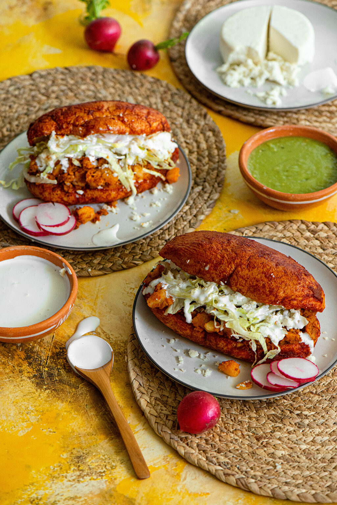

Description
Classic Mexican fare. So good
you will die and be reborn as a Mexican.
- 2lbs extra lean ground beef
- 1 medium onion chopped
- 1 jalapeno pepper,seeded and minced
- 3 cloves garlic, chopped
- 1 tablespoons chili powder, or more to taste
- salt to taste
- 2 large potatoes, peeled and cubed
- 2 large carrot, chopped
- 12 medium sandwich rolls
- 1 (28 ounce) can red enchilada sauce (also called red chili sauce
- 1 cup vegetable oil, or as needed
- 1 cup shredded lettuce, or to taste
- 1/2 cup crumbled queso fresco, or to taste
- 1 medium avocado, sliced or to taste
- 1/4 cup sour cream, or to taste
Steps to Make Those Food
- Heat a large skillet over medium-high heat. Cook and stir beef, onion, jalapeno, garlic, chili powder, vinegar, and salt in the hot skillet until beef is browned and crumbly, 5 to 7 minutes.
- Bring a pot of lightly salted water to a boil. Boil the potatoes and carrots just until tender, 15 to 20 minutes. Drain and dice them.
- Cut rolls lengthwise and hollow out, removing some of the bread in the center of the rolls with your fingers. Lay the rolls in the sauce with the outsides down. These should look like little boats floating in the sauce.
- Heat oil in a deep skillet over medium heat. Fry the sauce-soaked roll halves in batches until browned on the outside, about 5 minutes. Remove and drain on a paper towel-lined plate.
-
Fill the bottoms of the fried rolls with the meat filling, then lettuce, cheese, and avocado slices. Spread sour cream on the undersides of the tops of the rolls. Place the tops on the rolls and serve.
Back to to the top
Retvrn to the index